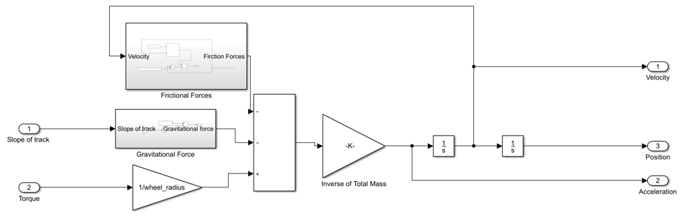
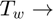
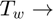
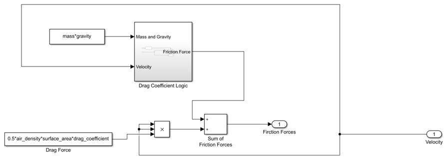

First task: Track characterization
Contents
Track1: Point A to B
To discover the slope of this segment one only has to know the length of the track a and the difference in altitude.
Length: From the script, the students are given the cartesian locations of the point A and B, so the distance is the simple euclidean distance:
clear
close all
A = [0 0];
B = [4.8 -70];
distance_A_B = sqrt(sum((A-B).^2));
simulation_length_track = distance_A_B;
Slope: To get the slope of the track, one must calculate the variation of elevation from point A to point B and divide by the length of the track all multiplied by 100, in order to give a slope of x%:
The elevations could be taken from ( https://earth.google.com/web/@38.7374323,-9.13903915,53.26387453a,257.77495577d,35y,0h,0t,0r ), however due to the small value of the slope, the previous measurement can be errogeneus, and it was decided to use a slope of 3%.
Variable to simulation
slope_of_track = 3;
Track2: Point C, D, E, F
Similar to track one, the length of each segment is given by the euclidean distance of the points given in the script. The slope is always 0 in this track.
C = [13.1 -97.5]; D = [19.2 -159]; E = [33.5 -158]; F = [28.5 -97.9]; distance_C_D = sqrt(sum((C-D).^2)); distance_D_E = sqrt(sum((D-E).^2)); distance_E_F = sqrt(sum((E-F).^2)); distance_F_C = sqrt(sum((F-C).^2));
Vehicle Dynamics Subsystem
The objective of this part of the Vienna project is to explore the car dynamics with respect to the certain inputs. One can see the systems inputs and outputs in the figure below.
open_system('car_dynamics_sim');
The forces present in the vehicle are the traction force ( ), gravitational force () and friction forces (F_d). The forces present are:
), gravitational force () and friction forces (F_d). The forces present are:
- Traction force;
- Drag force;
- Rolling friction force;
- Gravitational force;

The theoretic approach presented above is applied in the simulation model bellow, where, from the slope of the track and the torque, the position, velocity and acceleration are extracted.
open_system('car_dynamics_sim/Vehicle Dynamics');
 Being:


mass factor;  medium density;
medium density;  aerodynamic drag coefficient; A frontal surface area; wind speed; rolling resistance coefficient;
aerodynamic drag coefficient; A frontal surface area; wind speed; rolling resistance coefficient;  and
and  mass a gravity;  torque; wheel radius;
mass a gravity;  torque; wheel radius;
The friction forces are implemented in the following way:
open_system('car_dynamics_sim/Vehicle Dynamics/Frictional Forces');
 Where the drag coefficient logic is implemented with:
open_system('car_dynamics_sim/Vehicle Dynamics/Frictional Forces/Drag Coefficient Logic');
The force of gravity, with respect to the slope of the track is implemented in the following manner:
open_system('car_dynamics_sim/Vehicle Dynamics/Gravitational Force');
The constants related to this simulation are:
At 25 ºC
air_density = 1.225; drag_coefficient = 0.33; surface_area = 2.14; wind_speed = (25/3.6); % If the velocity is less than 0.1 m/s rolling_resistance_coefficient_0 = 0; % If the velocity is greater than 0.1 m/s rolling_resistance_coefficient_1 = 0.01; mass = 900; gravity = 9.8; % Wind against car v_wind = 25/3.6; % To calculculate the equivalent mass of rotational parts wheel_inertia = 0.25; wheel_radius = 0.165; motor_rotor_inertia = 0.0025; gearbox_ratio = 8; equ_mass_of_rot_parts = (1/wheel_radius^2)*(wheel_inertia+motor_rotor_inertia*gearbox_ratio^2);
Track1: Simulation
Now, with a torque of 150 Nm, new it is possible to simulate the possible to simulate the movement of the Vienna car. To achieve this, a simulink model of the car dynamics was built:
torque = 150;
track1 = sim('car_dynamics_sim');
Thus, one can now study the evolution of the position of the car:
plot(track1.time, track1.position, 'LineWidth', 1); set( gca, 'FontSize', 11); grid on; title('Position Track1'); xlabel('time $[s]$','Interpreter', 'latex'); ylabel('Position [$m$]','Interpreter', 'latex');
The car takes 18.96 seconds to go through the track 1.
The evolution of the velocity is:
plot(track1.time, track1.velocity*3.6,track1.time, track1.acceleration, 'LineWidth', 1); set( gca, 'FontSize', 11); grid on; title('Velocity and Acceleration Track1'); xlabel('time $[s]$','Interpreter', 'latex'); ylabel('Velocity [$km/h$]','Interpreter', 'latex');
One can see that the maximum velocity is 26 [km/h], (which exceeds the lawfull velocity limits for the coexistence zones) and the acceleration is approximately constant (not quite, as seen in the following plot), equal to 0.367 [m/s^2].
The evolution of the acceleration is given by:
plot(track1.time, track1.acceleration, 'LineWidth', 1); set( gca, 'FontSize', 11); grid on; title('Acceleration Track1'); xlabel('time $[s]$','Interpreter', 'latex'); ylabel('Acelleration [$m/s^2$]','Interpreter', 'latex');
The acceleration decreases abruptly in the beginning and then continues to decrease quadratically. The first abruption is the result of the friction coefficient changing instantaneously once the velocity reaches 0.1 [m/s], and subsequent quadratic decline is due to the drag friction, that depends on the quadratic value of the velocity.
The power traction developed by the vehicle during this motion is given by:
traction_force = (equ_mass_of_rot_parts + mass) * track1.acceleration; traction_power = traction_force.*track1.velocity; plot(track1.time, traction_power/1000, 'LineWidth', 1); set( gca, 'FontSize', 11); grid on; title('Power Consumption Track1'); xlabel('time $[s]$','Interpreter', 'latex'); ylabel('Power [$kW$]','Interpreter', 'latex');
As expected, the power consumed increases linearly with the velocity, having its peak value at 2.455 [kW].
Energy
The total energy consumed is given by the integral of the potency, having a total value of 0.0068 [kWh].
display(trapz(track1.time, traction_power/(1000*3600)));
0.0068
Track2: Simulation
In order to study the circuit formed by the point C, D, E and F, a track with the same length as one lap around this circuit is simulated. This simulation is valid because the forces involved in the turns are neglected.
track2_length = distance_C_D + distance_D_E + distance_E_F + distance_F_C; simulation_length_track = track2_length;
For this track, it is considered that the slope of the ground is 0º.
slope_of_track = 0;
Now, with a torque of 40 Nm, new it is possible to simulate the possible to simulate the movement of the Vienna car. To achieve this, a simulink model of the car dynamics was built:
torque = 40;
track2 = sim('car_dynamics_sim');
Thus, one can now study the evolution of the position of the car:
plot(track2.time, track2.position, 'LineWidth', 1); set( gca, 'FontSize', 11); grid on; title('Position Track2'); xlabel('time $[s]$','Interpreter', 'latex'); ylabel('Position [$m$]','Interpreter', 'latex');
The car takes 42.74 seconds to go through the track 2.
The evolution of the velocity is:
plot(track2.time, track2.velocity*3.6,track2.time, track2.acceleration, 'LineWidth', 1); set( gca, 'FontSize', 11); grid on; title('Velocity and Acelleration Track2'); xlabel('time $[s]$','Interpreter', 'latex'); ylabel('Velocity [$km/h$]','Interpreter', 'latex');
One can see that the maximum velocity is 24 [km/h], (which again exceeds the lawfull velocity limits for the coexistence zones) and the acceleration is approximately constant (not quite, as seen in the following plot), equal to 0.15 [m/s^2].
The evolution of the acceleration is given by:
plot(track2.time, track2.acceleration, 'LineWidth', 1); set( gca, 'FontSize', 11); grid on; title('Acceleration Track2'); xlabel('time $[s]$','Interpreter', 'latex'); ylabel('Acelleration [$m/s^2$]','Interpreter', 'latex');
Once again, the acceleration decreases abruptly in the beginning and then continues to decrease quadratically. The first abruption is the result of the friction coefficient changing instantaneously once the velocity reaches 0.1 [m/s], and subsequent quadratic decline is due to the drag friction, that depends on the quadratic value of the velocity.
The power traction developed by the vehicle during this motion is given by:
traction_force = (equ_mass_of_rot_parts + mass) * track2.acceleration; traction_power = traction_force.*track2.velocity; plot(track2.time, traction_power/1000, 'LineWidth', 1); set( gca, 'FontSize', 11); grid on; title('Power Consumption Track2'); xlabel('time $[s]$','Interpreter', 'latex'); ylabel('Power [$kW$]','Interpreter', 'latex');
As expected, the power consumed increases linearly with the velocity, having its peak value at 0.923 [kW].
Energy
The total energy consumed is given by the integral of the potency, having a total value of 0.0061 [kWh].
display(trapz(track2.time, traction_power/(1000*3600)));
0.0061
Conclusions:
One can notice that the track 2 has approximately twice the length of the track 1, and the time of completion of the track 2 is also twice the time used to finish the track 1.
Despite the difference, in both tracks the car ends with a velocity close to 25 [km/h]. If the tracks had the same slope and the car had the same torque, the final velocity should also have a ratio of approximately 2/1. However, the torque for the track 2 is around 30% the torque of the track 1, and the slope of the track 1 is 3% greater than the track 2. So, here it becomes evident the effect of the slope in the car performance, where a small alteration in the slope of the road traduces in a great deal the acceleration of the vehicle. The slope of the road results in a gravitational force that decelerates the car, and the heavier the car (heavy batteries in electric cars for example), the more this effect is felt.
Comparing the power, one can see that for achieving the same velocity in approximately half the distance and time, the car in track 1 has a peak power demand 2.65 times higher than the car in the track 2, once again due to the power needed to overcome the force of the gravity pulling the car back.
Finally, one can see that the difference in total energy spent to achieve approximately the same final velocity is more or less the same. This is due to the fact that the final kinetic energy of the cars in both tracks is the same. However, it is to notice that in track 1 the car also has slight variation in potential energy, explaining the small difference in the final energy spent in both tracks.